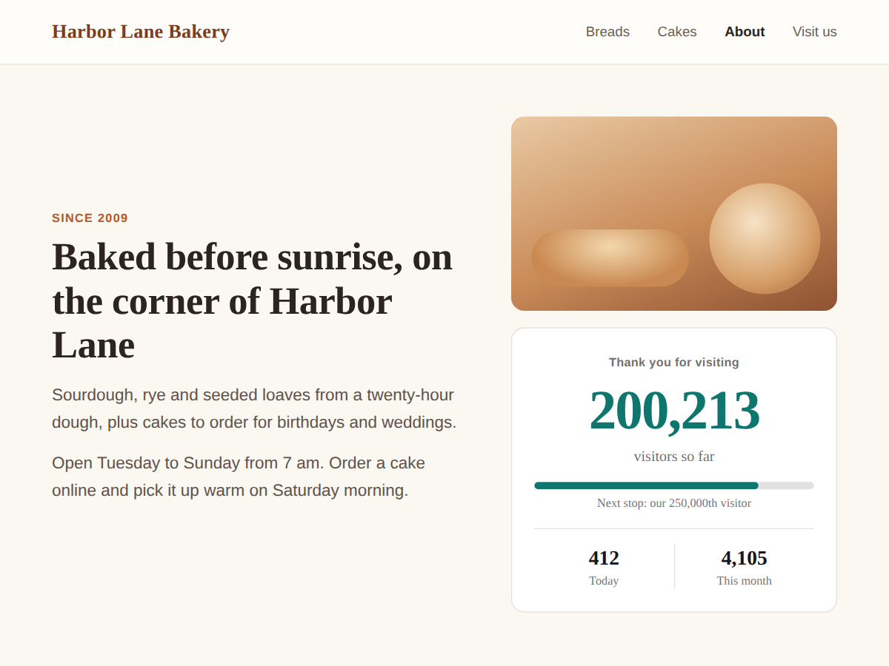

Visitor Counter: Live Stats
Hit counter showing your real site visitor stats
- Same numbers as your analytics dashboard
- Starts with 61 days of history on install
- No tracking script or cookie on visitors
- All-time total, goal bar, odometer (Premium)

What it does
Show how many people visit your site, using the visitor numbers your site's own analytics already count. The counter reads the same analytics data you see in your dashboard, not a second tracker that disagrees with it.
Nothing is added to your visitors' browsers: no tracking script, no cookie, no extra consent banner. Our backend reads a few site-wide totals from your analytics and refreshes them about once an hour.
It starts with history. On install day the counter already knows up to 61 days of visits, so a busy site never starts at zero. From then on it keeps one total per month, which is how the all-time number keeps growing.
The free plan shows one counter: unique visitors or visits, for the last 30 days or this month, as a card with a big number or as one line of text. You pick the words, colours and font, and you can hide the counter until it reaches a number you like. A small credit link sits under it.
Premium adds the all-time total with a starting number for the years before, today, the last 7 days and this year, up to three numbers side by side, a goal bar, a line such as "37 people contacted us this week", badge and odometer styles, and removes the credit link.
Price
Free
- One counter: 30 days or this month
- Unique visitors or visits
- Card or one-line style
- Small credit link
Premium
$4/month, yearly 20% off
- All-time total with a starting number
- Today, 7 days, this year, 3 numbers
- Goal bar, contacted-us line, odometer
- Remove the credit link